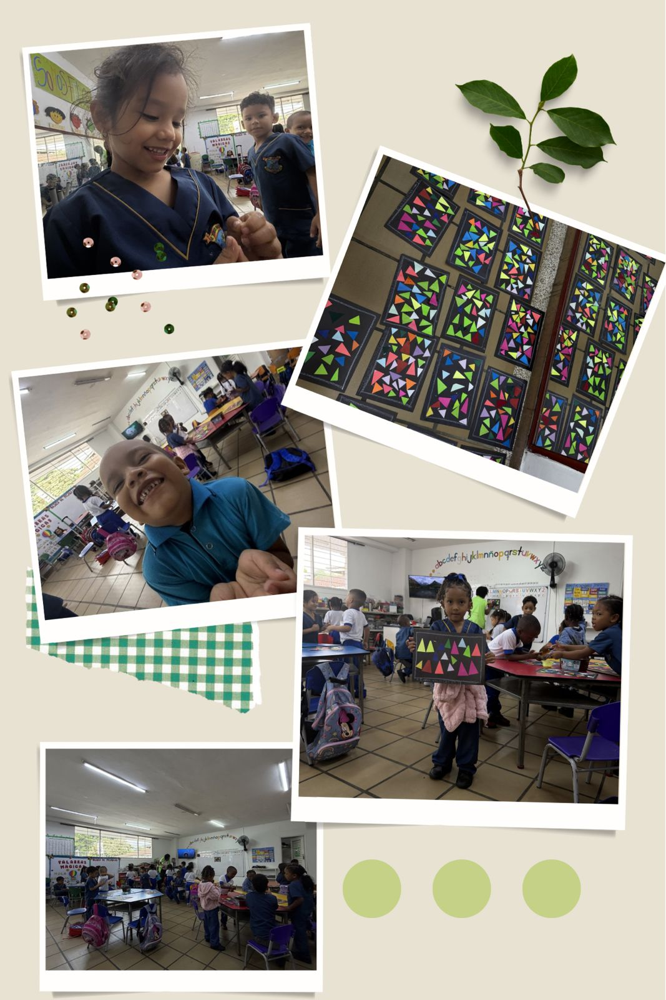

- Fecha: 09 de Abril
- Lugar: IETI Donald Rodrigo Tafur sede Francisco J. Ruiz
- Tipo de Actividad: Observación
- Participante: Valentina Caldon López
👀 Observación
La docente desarrolló una actividad enfocada en el aprendizaje mediante el arte y la exploración de figuras geométricas, donde los estudiantes organizaron figuras de diferentes tamaños y colores sobre cartulina.

🎯 Actividad
La docente explicó las instrucciones con claridad, usó ejemplos visuales y acompañó constantemente a los estudiantes, promoviendo la creatividad y la organización del espacio.
🤝 Interacción
Se evidenció trabajo colaborativo, diálogo entre estudiantes y un ambiente de confianza donde los niños compartieron materiales y expresaron satisfacción por sus creaciones.